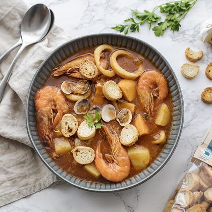
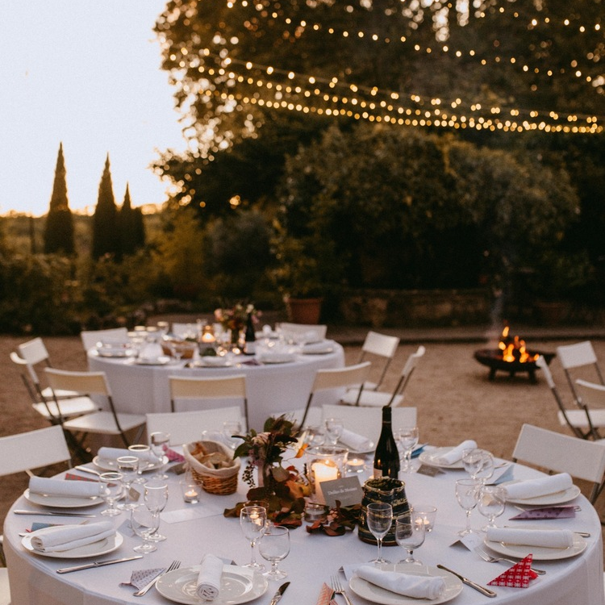
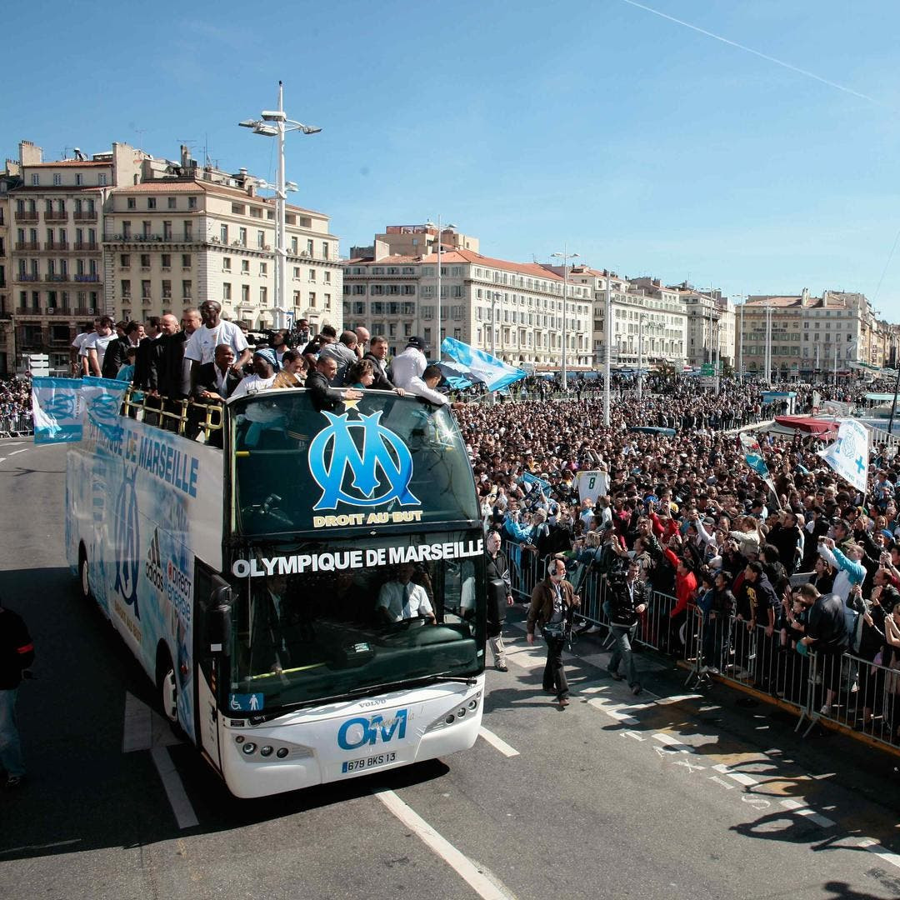

SOON
March, 14th to 18th 2022
A Rich and Diverse Topics
MS Metabolomics
NMR Metabolomics
Computational Metabolomics
Fluxomics
Workshops
Young sessions
Forecast programme
Monday
-

3 PM
Bus from train station
-

4.30 PM
Settle down
-

6 PM
Welcome drink
-

6.30 PM
Introduction to school metabolomic
Some fun application
Young scientists in metabolomics networking.
-

8.30 PM
Dinner
Tuesday
-

9 AM
Young informal session
-

10.30 AM
Coffee
-
11 AM
Young informal session
-

12.30 AM
Technical Advance 1
Sponsor talk.
-

1 PM
Lunch
-
2.30 PM
MS metabolomics
Pipeline, updates and tips.
Julijana IVANISEVIC -
4 PM
Coffee
-
4.30 PM
MS metabolomics
Data treatment, XCMS.
Julijana IVANISEVIC -
6 PM
Technical Advance 2
Sponsor talk.
-

6.30 PM
Apéro - break
Have fun, networking.
-
8 PM
Reporting standards, FAIR Data sharing
Reza SALEK
With tapas diner. #GoodFoodGoodScience
Wednesday
-

9 AM
Tools for metabolites identification
(GNPS, MS2LDA...).
Daniel PETRAS -

10.30 AM
Coffee
-
11.30 AM
Technical Advance 4
Sponsor talk.
-

12 AM
Young session
Standard and flash presentations.
-
1 PM
Lunch / Picnic
-
2 PM
Cool activities!
Have fun, networking.
-
8.30 PM
Tapas diner
Natasa and Marine
#GoodFoodGoodScience
Preparing a grant demand.
Thursday
-
9 AM
NMR metabolomics
Pipeline, updates and tips.
Bénédicte ELENA-HERRMANN -
10.30 AM
Coffee
-
11 AM
Technical Advance 3
Sponsor talk.
-
11.30 AM
Statistics
Stat topic.
Timothy EBBELS -

1 PM
Lunch
-
2.30 PM
Tools for data interpretation
Pipeline, updates and tips.
Fabien JOURDAN -
4 PM
Coffee
-
4.30 PM
Round table
-
6 PM
Break time
-
6.30 PM
Young session
Flash presentations.
-
7.30 PM
Apéro - break
Have fun, networking.
-

8.30 PM
Gala diner
-
10 PM
Fiesta
Friday
-
10 AM
Fluxomics
Basics.
Jean-Charles PORTAIS -
11.30 AM
Coffee
-
12 AM
Happy ending
-

1 PM
Bus to train station
Registration Requirements
People
Have max 34 years old
or
within 5 years of your PhD
Registration Fee
400 euros
Full board in shared room
Transport from Marseille airport or Aix en Provence TGV station
Departure of the bus to the monastery on Monday in the early afternoon
Return to the airport and TGV station on Friday in the early afternoon, time to be defined according to international transport schedules


Team
Scientific committee.

Katharina HERZOG
Sweden
Lund

Sara TORTORELLA
Italy
Bettona
Marine LETERTRE
France
Nantes
Natasa GIALLOUROU
United Kingdom
London
Alison Woodward
United Kingdom
Nottingham

Dimitrios DAMALAS
Greece
Athens
Salah Abdelrazig
United Kingdom
Nottingham

Justin J. J. VAN DER HOOFT
Netherlands
Wageningen
Lukáš Najdekr
Czech Republic
Olomouc
Local.

Thaïs HAUTBERGUE
France
Paris
Nathan CARRIOT
France
Toulon
Lea ROCH
France
Bordeaux

Cecilia BERGES
France
Toulouse
Corentine GOOSSENS
Canada
Montreal
Sylvain Dechaumet
France
Paris

Maxime CHAZALVIEL
France
Toulouse
Contact
RFMF junior
Monastère de Ségries


Moustiers et Sainte Croix